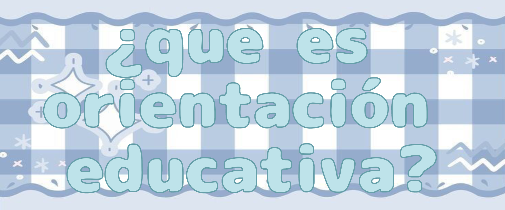

Desde los centros escolares se fomenta la educación, pero también el desarrollo a nivel personal y social. Por eso, las escuelas no solo trabajan los contenidos de las diferentes materias, sino también ayudan al correcto desenvolvimiento de los niños, a mantener una comunicación y relación constante con las familias, a desarrollar habilidades y competencias en los estudiantes, etc. En este contexto, es importante el papel de los docentes y del equipo de trabajo del centro, donde destaca la función de orientación educativa, la cual tiene lugar desde las aulas y también mediante el apoyo del departamento de orientación de un centro educativo.
Pero, ¿Qué es orientación educativa? Es un proceso por el cual se apoya a la familia y al alumnado para conseguir un correcto desarrollo a nivel personal y educativo. La orientación pretende ofrecer las herramientas necesarias para que los niños puedan conseguir sus objetivos, ayudando a los estudiantes en la toma de decisiones educativas. Esta se da desde las aulas, ya que una de las funciones del profesorado es la de orientar tanto a las familias como al alumnado, viéndose apoyado en caso de ser necesario por los departamentos o servicios de orientación y los profesionistas necesarios.
Así pues, la orientación académica se lleva a cabo en los centros para ayudar a alumnado y familias en el proceso educativo, tratando aspectos del desarrollo, puntos fuertes de los estudiantes, necesidades a las que se enfrentan.


꒷꒦︶꒷꒦︶ ๋ ࣭ ⭑꒷꒦
𓂃˖˳·˖ ִֶָ ⋆Ventajas de la orientación educativa⋆ ִֶָ˖·˳˖𓂃 ִֶָ
Mediante el trabajo que se realiza entre el docente, las familias, el alumnado y el orientador educativo, se pueden conseguir varios beneficios:
┈➤Amplio conocimiento del alumnado: mediante el trabajo de la orientación educativa, el profesorado obtiene información de las familias y viceversa, permitiendo una atención más personalizada del alumnado y ofreciendo los elementos necesarios para su desarrollo. Así mismo, los estudiantes también aumentan el conocimiento de sí mismos, sobre sus posibilidades y sus cualidades ༄
┈➤ Identificación de dificultades de aprendizaje: mediante la obtención de información y el trabajo en el centro y la familia, se consigue identificar las dificultades, detectar las necesidades educativas especiales, en el caso de haberlas, pudiendo establecer las adaptaciones curriculares necesarias. Este trabajo también contribuye a la prevención del fracaso escolar ༄
┈➤ Asesoramiento: desde la orientación se ayuda a las familias a saber cómo trabajar desde casa con sus hijos para colaborar en su educación y desarrollo ༄
┈➤ Toma de decisiones: favorece la elección del alumnado en cuanto a su futuro educativo y profesional ༄
┈➤ Resolución de problemas: la orientación escolar permite trabajar con los estudiantes para que desarrollen las habilidades necesarias para resolver los conflictos que puedan surgir, consiguiendo un ambiente adecuado en el aula y en el hogar ༄
┈➤ Adaptación de la enseñanza: mediante el conocimiento del alumnado se consigue adaptar el proceso de enseñanza-aprendizaje con el objetivo de favorecer el desarrollo educativo y personal. A través de la comunicación con las familias y el trabajo con el menor se consigue información importante que permite conocer las necesidades y cualidades de cada uno para personalizar la educación ༄
*ੈ✩‧₊˚༺☆༻*ੈ✩‧₊˚